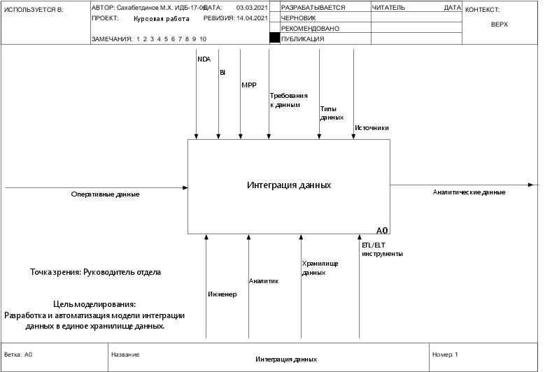
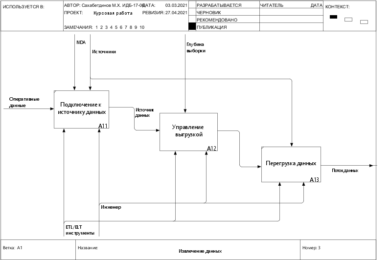
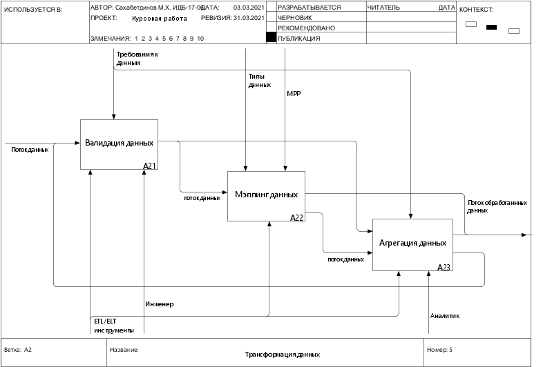
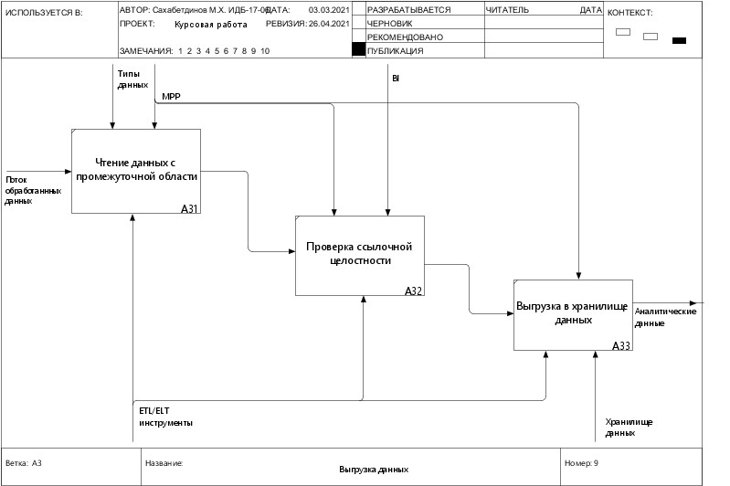
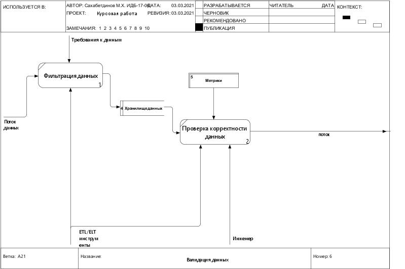
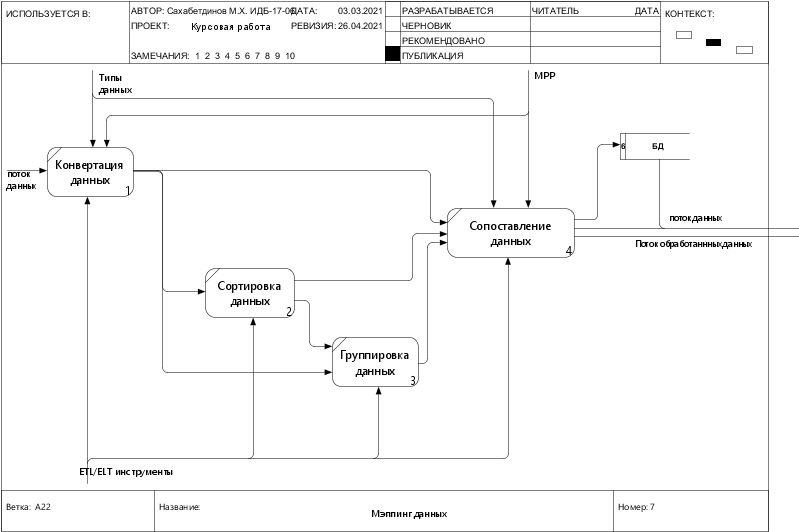

Функциональное моделирование процессов (IDEF0)
A-0 (контекстная диаграмма)

A0 (диаграмма верхнего уровня)
A1 (диаграмма верхнего уровня)

A2 (диаграмма верхнего уровня)

A3 (диаграмма верхнего уровня)

Функциональное моделирование процессов (IDEF0)
Автоматизация процессa A12
Автоматизация процессa A21

Автоматизация процессa A22

Автоматизация процессa A23